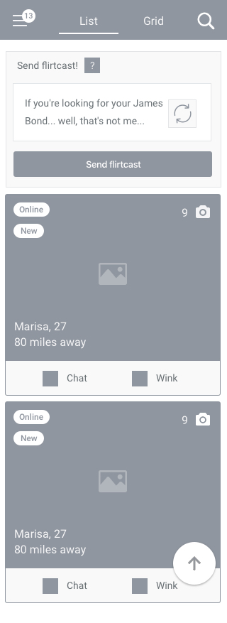
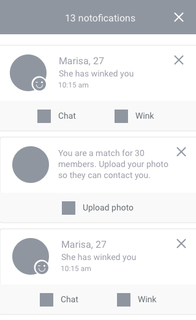
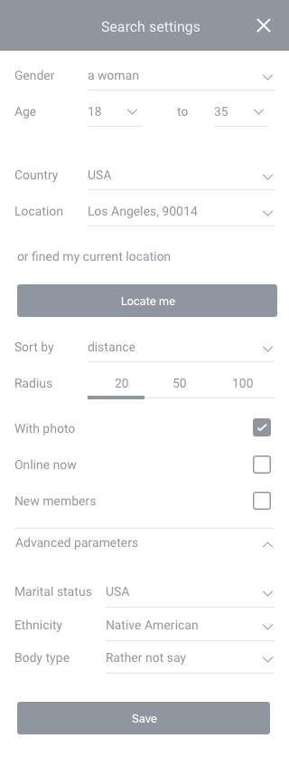
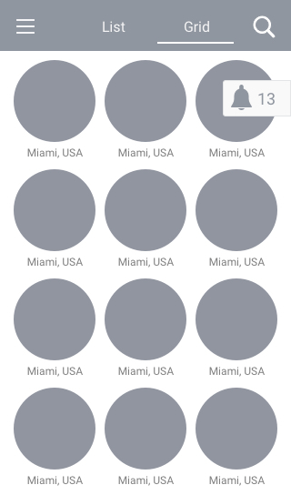
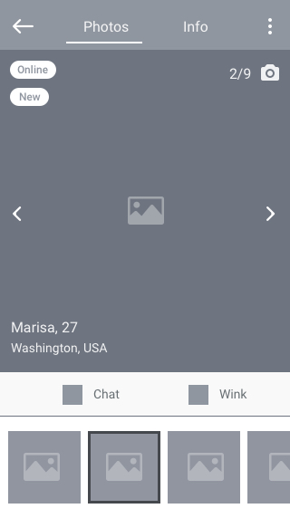
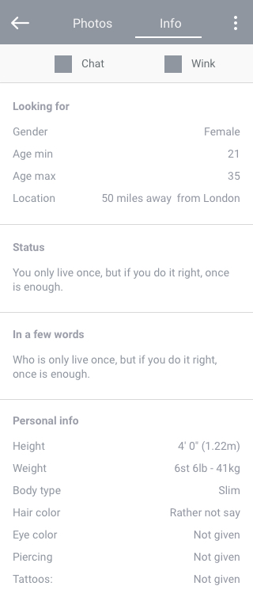
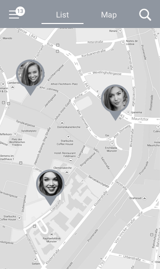
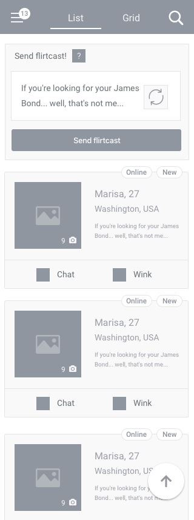

Simplify the mobile experience
Create a convenient and straightforward mobile experience with clear navigation and interactions.
A mobile-first dating experience designed to help users discover relevant matches, evaluate profiles and start conversations with less friction.
The dating experience combined several high-value tasks: finding relevant people, narrowing results, reviewing profiles and starting conversations. On mobile, these interactions needed to remain clear and easy to navigate.
The design challenge was to structure the experience around the user's primary goals while keeping discovery, communication and subscription features easy to access.
Create a convenient and straightforward mobile experience with clear navigation and interactions.
Help users find people matching their criteria and move naturally from discovery to conversation.
Identify friction in the activation funnel and support registrations and subscription purchases.
The information architecture was organised around the core tasks of the product: registration, profile discovery, matching and communication, with paid capabilities layered into the experience.
A key scenario focused on helping a registered user find people based on specific search criteria.
The flow maps the path from opening Search to applying criteria and reviewing matching profiles, including the empty-state scenario when no exact matches exist.
Wireframes were used to establish content hierarchy, navigation and interaction patterns before moving into the visual design.
The interactive prototype was used to explore the end-to-end mobile experience and validate the key navigation and interaction patterns.






Reusable interface elements helped keep the experience consistent across the main mobile journeys and screens.
The final UI brought together the interaction patterns explored in the earlier stages into a consistent visual system for the mobile experience.
Two design directions were explored to understand user preferences and test assumptions around the presentation of the experience.

Hypothesis: Testing alternative presentations would help identify the option preferred by the target audience.

Hypothesis: Increasing the prominence of the profile photo could increase user interest and retention, with a potential positive effect on conversion.
The resulting concept brings together profile discovery, search, matching and communication into a structured mobile journey, while supporting the product's subscription model.